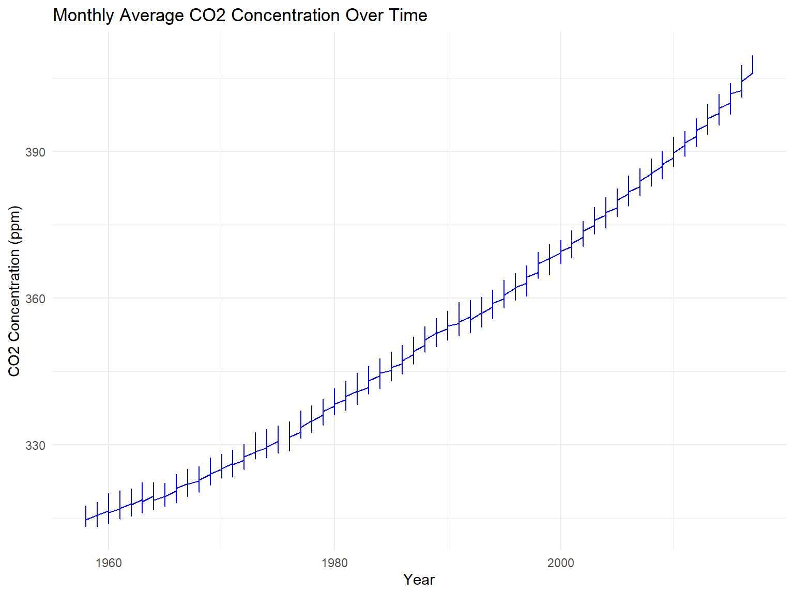
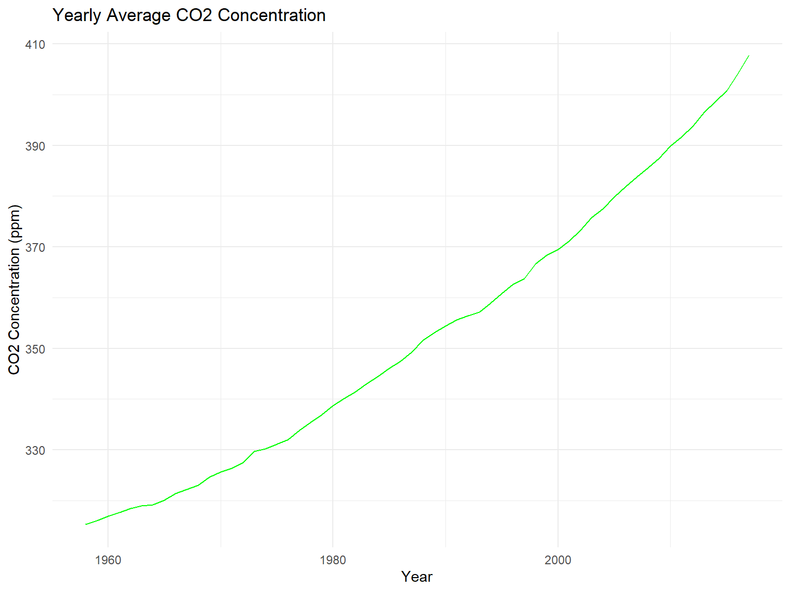
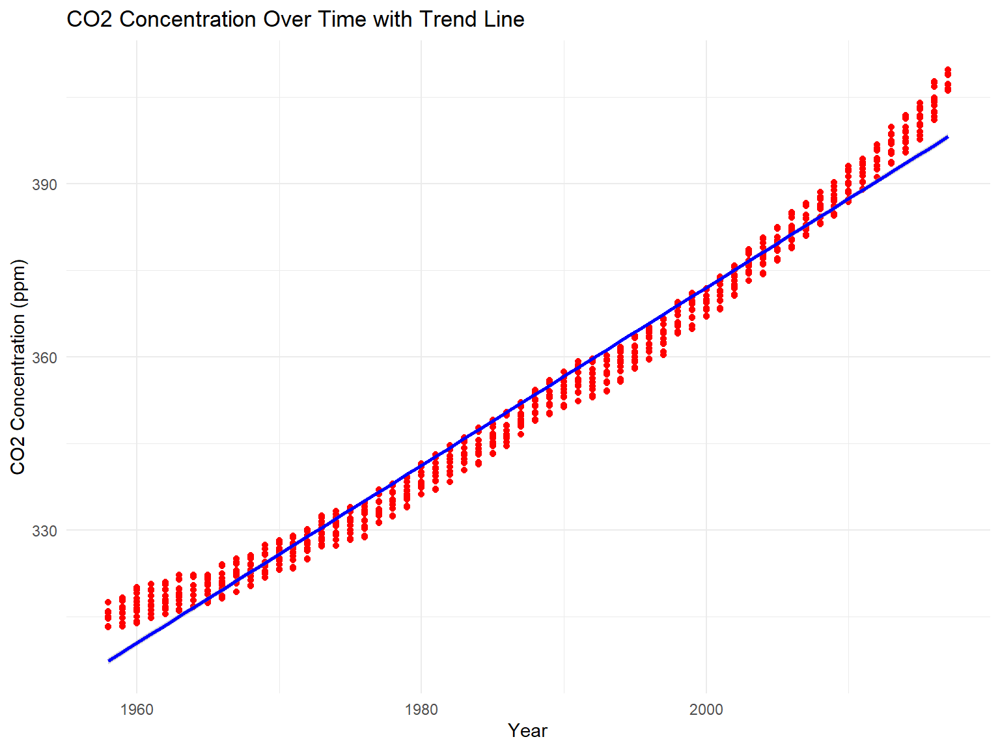
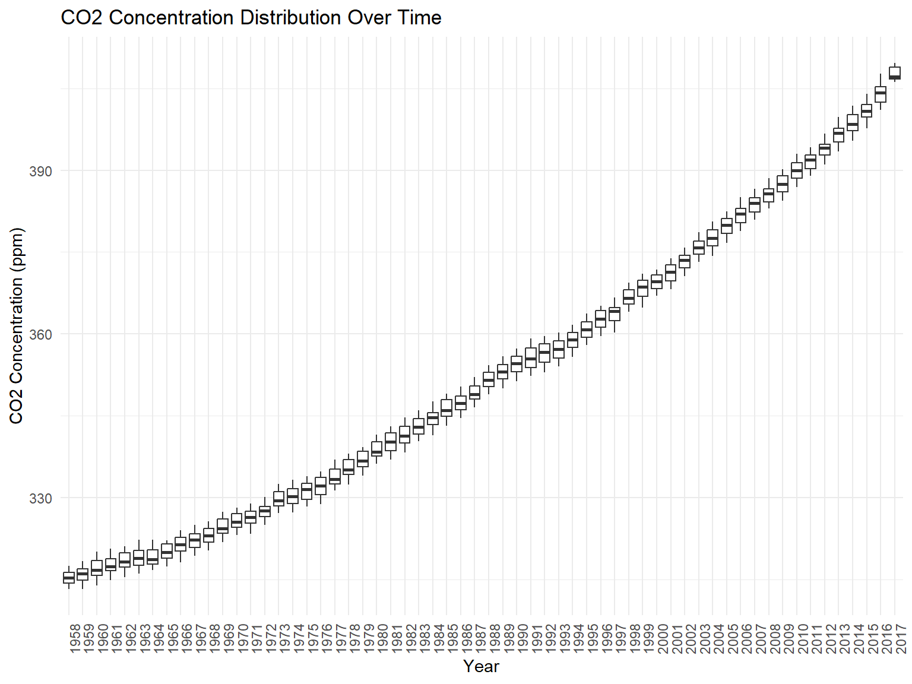
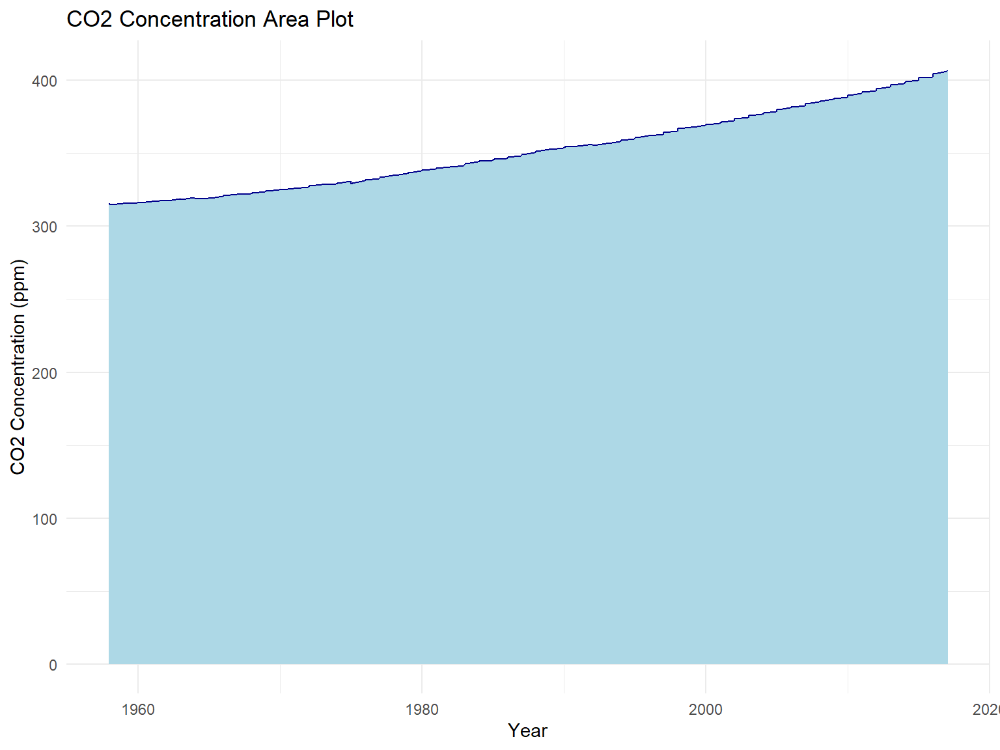
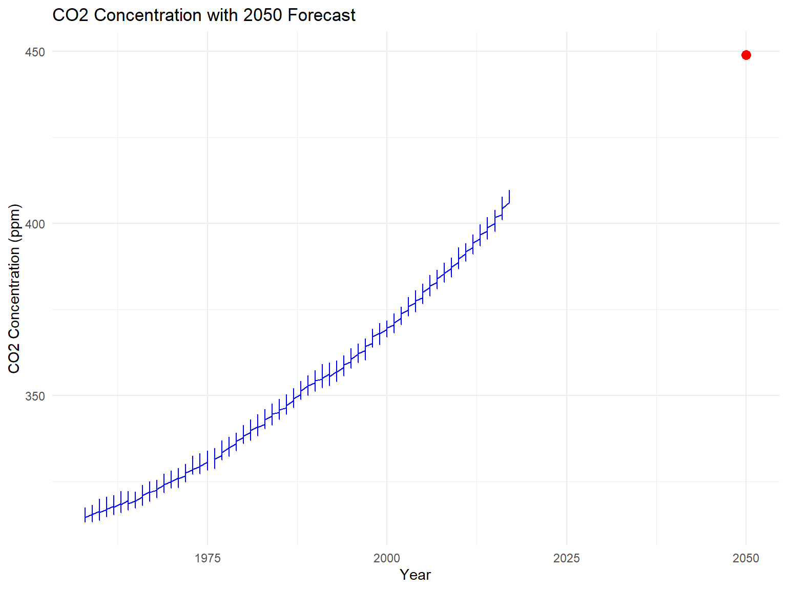
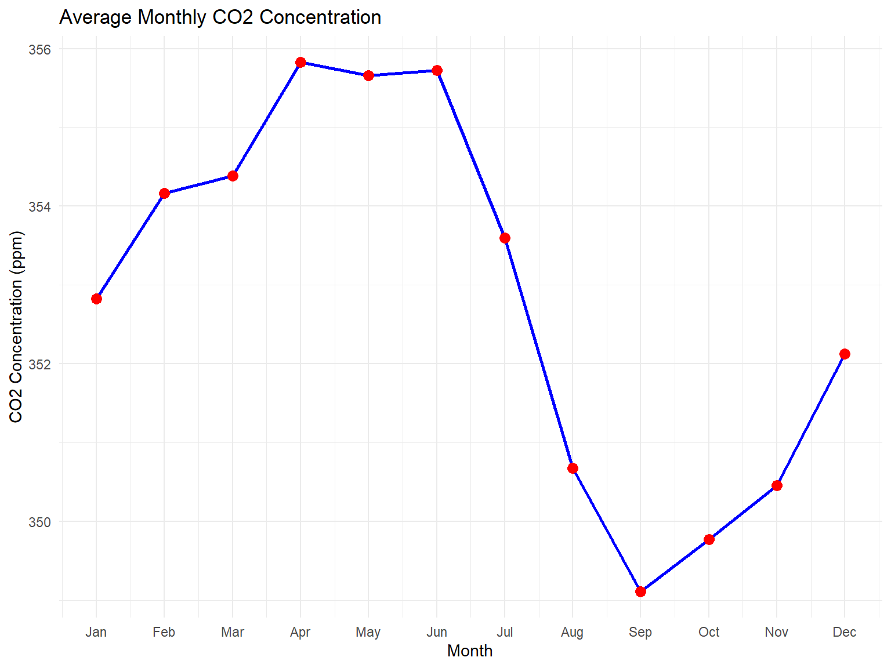

# Load and clean data
co2 <- read_excel("co2.xlsx")
co2 <- janitor::clean_names(co2)
# Replace -99.99 with NA in the monthly_average column
co2_cleaned <- co2 %>%
mutate(monthly_average = ifelse(monthly_average == -99.99, NA, monthly_average))CO2 Concentration Analysis
1 Introduction
This document presents an analysis of CO2 concentrations over time, including data cleaning, visualization, trend analysis, and future forecasts. The analysis is based on the CO2 data provided in an Excel file.
2 Load and Clean the Data
3 Data Inspection
Let’s start by inspecting the structure of the dataset.
# Inspect data
dim(co2)[1] 713 5head(co2)# A tibble: 6 × 5
year month monthly_average interpolated trend
<dbl> <dbl> <dbl> <dbl> <dbl>
1 1958 3 316. 316. 315.
2 1958 4 317. 317. 315.
3 1958 5 318. 318. 315.
4 1958 6 -100. 317. 315.
5 1958 7 316. 316. 315.
6 1958 8 315. 315. 316.tail(co2)# A tibble: 6 × 5
year month monthly_average interpolated trend
<dbl> <dbl> <dbl> <dbl> <dbl>
1 2017 2 406. 406. 406.
2 2017 3 407. 407. 406.
3 2017 4 409 409 406.
4 2017 5 410. 410. 406.
5 2017 6 409. 409. 407.
6 2017 7 407. 407. 407.glimpse(co2)Rows: 713
Columns: 5
$ year <dbl> 1958, 1958, 1958, 1958, 1958, 1958, 1958, 1958, 1958, …
$ month <dbl> 3, 4, 5, 6, 7, 8, 9, 10, 11, 12, 1, 2, 3, 4, 5, 6, 7, …
$ monthly_average <dbl> 315.71, 317.45, 317.50, -99.99, 315.86, 314.93, 313.20…
$ interpolated <dbl> 315.71, 317.45, 317.50, 317.10, 315.86, 314.93, 313.20…
$ trend <dbl> 314.62, 315.29, 314.71, 314.85, 314.98, 315.94, 315.91…4 Highest CO2 Concentration
Identify the highest recorded CO2 concentration.
# Find the highest CO2 concentration
highest_co2 <- co2_cleaned %>%
arrange(desc(monthly_average)) %>%
head(1)
highest_co2# A tibble: 1 × 5
year month monthly_average interpolated trend
<dbl> <dbl> <dbl> <dbl> <dbl>
1 2017 5 410. 410. 406.5 Yearly Average CO2 Concentration
Calculate the yearly average CO2 concentration.
# Calculate yearly average CO2 concentration
yearly_avg_co2 <- co2_cleaned %>%
group_by(year) %>%
summarise(mean_co2 = mean(monthly_average, na.rm = TRUE))
yearly_avg_co2# A tibble: 60 × 2
year mean_co2
<dbl> <dbl>
1 1958 315.
2 1959 316.
3 1960 317.
4 1961 318.
5 1962 318.
6 1963 319.
7 1964 319.
8 1965 320.
9 1966 321.
10 1967 322.
# ℹ 50 more rows6 Visuals for Presentation
Here are several key visuals that illustrate the trends in CO2 concentration over time.
6.1 Monthly Average CO2 Concentration Over Time
# Plot monthly average CO2 concentration over time
co2_cleaned %>%
ggplot(aes(x = year, y = monthly_average)) +
geom_line(color = "blue") +
labs(title = "Monthly Average CO2 Concentration Over Time",
x = "Year",
y = "CO2 Concentration (ppm)") +
theme_minimal()
6.2 Yearly Average CO2 Concentration
# Plot yearly average CO2 concentration
yearly_avg_co2 %>%
ggplot(aes(x = year, y = mean_co2)) +
geom_line(color = "green") +
labs(title = "Yearly Average CO2 Concentration",
x = "Year",
y = "CO2 Concentration (ppm)") +
theme_minimal()
6.3 CO2 Concentration Over Time with Trend Line
# Scatter plot with trend line
co2_cleaned %>%
ggplot(aes(x = year, y = monthly_average)) +
geom_point(color = "red") +
geom_smooth(method = "lm", color = "blue") +
labs(title = "CO2 Concentration Over Time with Trend Line",
x = "Year",
y = "CO2 Concentration (ppm)") +
theme_minimal()`geom_smooth()` using formula = 'y ~ x'Warning: Removed 7 rows containing non-finite outside the scale range
(`stat_smooth()`).Warning: Removed 7 rows containing missing values or values outside the scale range
(`geom_point()`).
6.4 CO2 Concentration Distribution (Boxplot)
# Boxplot of CO2 concentration over time
co2_cleaned %>%
ggplot(aes(x = factor(year), y = monthly_average)) +
geom_boxplot() +
labs(title = "CO2 Concentration Distribution Over Time",
x = "Year",
y = "CO2 Concentration (ppm)") +
theme_minimal() +
theme(axis.text.x = element_text(angle = 90))Warning: Removed 7 rows containing non-finite outside the scale range
(`stat_boxplot()`).
6.5 CO2 Concentration Area Plot
# Area plot of CO2 concentration over time
co2_cleaned %>%
ggplot(aes(x = year, y = monthly_average)) +
geom_area(fill = "lightblue", color = "darkblue") +
labs(title = "CO2 Concentration Area Plot",
x = "Year",
y = "CO2 Concentration (ppm)") +
theme_minimal()Warning: Removed 7 rows containing non-finite outside the scale range
(`stat_align()`).
7 CO2 Increase Rate
Let’s calculate the rate of increase in CO2 concentration.
# Calculate CO2 increase rate
increase_rate <- co2_cleaned %>%
summarise(increase_rate = (max(monthly_average, na.rm = TRUE) - min(monthly_average, na.rm = TRUE)) /
(max(year) - min(year)))
increase_rate# A tibble: 1 × 1
increase_rate
<dbl>
1 1.638 Forecasting Future CO2 Levels
We will use a linear model to forecast future CO2 levels, specifically predicting for the year 2050.
# Forecast CO2 levels for 2050
co2_model <- lm(monthly_average ~ year, data = co2_cleaned)
future_co2 <- predict(co2_model, newdata = data.frame(year = 2050))
future_co2 1
448.9235 9 Visualize the CO2 Forecast
Visualize the forecasted CO2 concentration in 2050 along with historical data.
# Plot historical data with forecast
co2_cleaned %>%
ggplot(aes(x = year, y = monthly_average)) +
geom_line(color = "blue") +
geom_point(aes(x = 2050, y = future_co2), color = "red", size = 3) +
labs(title = "CO2 Concentration with 2050 Forecast",
x = "Year",
y = "CO2 Concentration (ppm)") +
theme_minimal()Warning in geom_point(aes(x = 2050, y = future_co2), color = "red", size = 3): All aesthetics have length 1, but the data has 713 rows.
ℹ Please consider using `annotate()` or provide this layer with data containing
a single row.
10 Average monthly plot
# Calculate the average CO2 concentration for each month across all years
monthly_avg <- co2_cleaned %>%
group_by(month) %>%
summarise(mean_co2 = mean(monthly_average, na.rm = TRUE))
# Plot the monthly average CO2 concentrations
ggplot(monthly_avg, aes(x = month, y = mean_co2)) +
geom_line(color = "blue", size = 1) +
geom_point(color = "red", size = 3) +
scale_x_continuous(breaks = 1:12, labels = month.abb) +
labs(title = "Average Monthly CO2 Concentration",
x = "Month",
y = "CO2 Concentration (ppm)") +
theme_minimal()Warning: Using `size` aesthetic for lines was deprecated in ggplot2 3.4.0.
ℹ Please use `linewidth` instead.
11 Expected Impact by 2050
Based on the forecast, the expected CO2 concentration by 2050 is:
# Expected impact by 2050
expected_impact <- paste("The CO2 concentration is expected to increase to", round(future_co2, 2), "ppm by 2050.")
expected_impact[1] "The CO2 concentration is expected to increase to 448.92 ppm by 2050."12 Mitigation Strategies
Mitigation strategies to reduce CO2 levels include:
- Transitioning to renewable energy sources
- Improving energy efficiency
- Carbon capture and storage
- Afforestation and reforestation
- Sustainable agriculture practices
- Carbon pricing mechanisms
- International cooperation and agreements
13 Mitigation Impact
Implementing these mitigation strategies could help stabilize and reduce CO2 concentrations, mitigating the impacts of climate change. Moreover, these strategies can contribute to sustainable development and a cleaner environment.
14 Adaptation Strategies
Adaptation strategies to cope with the impacts of rising CO2 levels include:
- Climate-resilient infrastructure
- Early warning systems for extreme weather events
- Ecosystem-based adaptation
- Sustainable water management
- Disaster risk reduction
- Health and social protection measures
- Community-based adaptation initiatives
15 Conclusion
This analysis provides insights into the trends and future forecasts of CO2 concentrations, highlighting the importance of addressing rising CO2 levels to mitigate the impacts on climate.